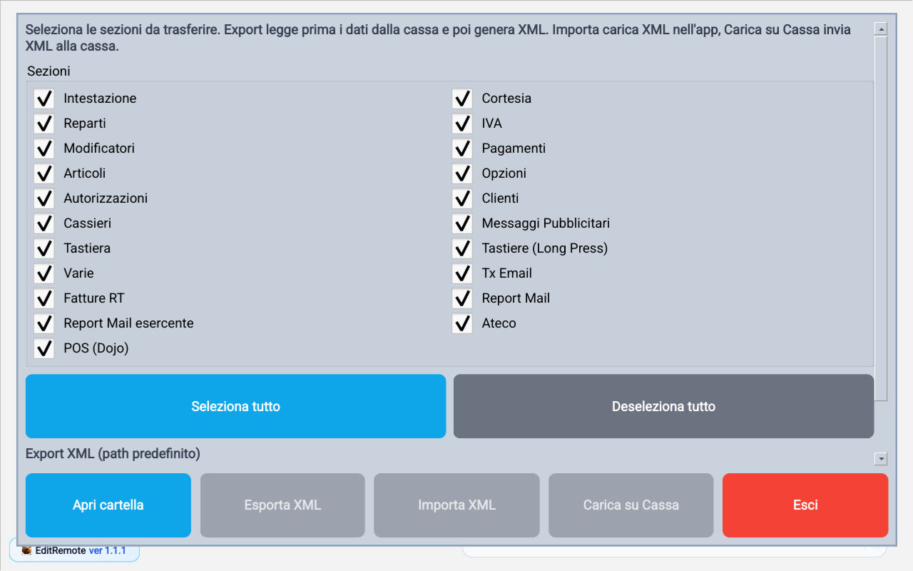
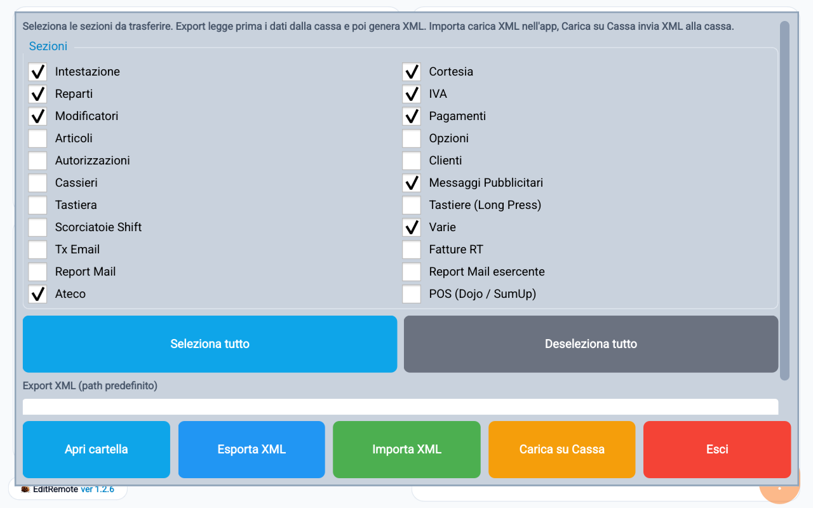
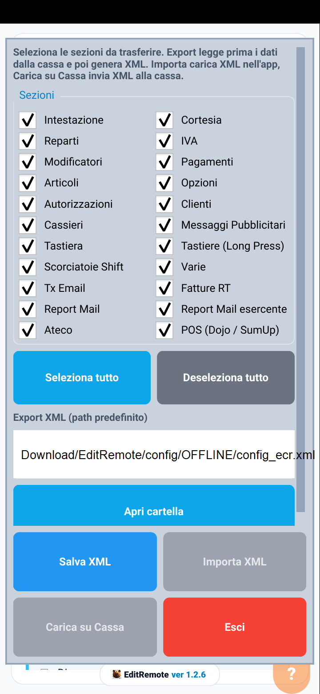

Import / Export
Guida operativa
Questa pagina serve a copiare la configurazione tra l'app e la cassa, tramite un file di salvataggio.
Flusso consigliato: prima Esporta XML (copia di sicurezza), poi Importa XML per caricare un file salvato sul computer, infine Carica su Cassa per inviare alla cassa solo le sezioni selezionate.
Come usare la pagina
- Seleziona le sezioni da includere nel trasferimento.
- Usa Seleziona tutto o Deseleziona tutto per cambiare in fretta la selezione.
- Controlla il percorso del file XML proposto dall'app.
- Premi Esporta XML per leggere dalla cassa e salvare il file.
- Premi Importa XML per caricare un file XML nell'app.
- Premi Carica su Cassa per programmare la cassa con le sezioni selezionate.
Significato campi e pulsanti
- Sezioni: le parti della configurazione da leggere o inviare (Intestazione, Reparti, IVA, Pagamenti, Tastiera, Varie, ecc.).
- Seleziona tutto / Deseleziona tutto: selezionano o tolgono in un colpo solo tutte le sezioni.
- Export XML (percorso predefinito): la posizione del file usata per salvare e leggere la copia.
- Apri cartella: apre la cartella in cui si trova il file XML.
- Esporta XML: copia la configurazione dalla cassa in un file sul computer.
- Importa XML: carica il file nell'app, senza inviarlo subito alla cassa.
- Carica su Cassa: invia alla cassa i dati delle sezioni selezionate.
In modalità Offline non puoi inviare dati alla cassa. Nella versione 1.2.6 il pulsante Importa XML risulta disabilitato in questa schermata: per il flusso basato su file, modifica una copia dell'XML con un editor esterno e riconnettiti alla stessa cassa prima di selezionare Carica su Cassa. L'avviso Offline mostrato all'avvio che cita Importa XML non corrisponde ai comandi disponibili.
Controlli finali consigliati
- Prima di caricare, controlla le sezioni selezionate e il contenuto del file XML.
- Conserva una copia di sicurezza del file XML prima di ogni modifica in blocco, che riguarda molti dati.
- Dopo Carica su Cassa, premi Esporta XML per rileggere i dati dalla cassa e fare un controllo finale.
Schermata Import / Export

Sul tablet: copia di sicurezza parziale e controllo finale

- Conserva una copia della copia di sicurezza originale fuori dalla cartella di lavoro: un nuovo Esporta XML può sovrascrivere lo stesso file.
- Importa XML aggiorna i dati nell'app; non equivale a una rilettura dalla cassa.
- Carica su Cassa richiede la scelta del file da inviare. Controlla file e sezioni prima di confermare.
- Attendi la fine di ogni trasferimento prima di iniziarne un altro: la lista di sezioni tornata visibile non basta, da sola, a confermare che il lavoro sia finito.
- Dopo la scrittura usa Esporta XML per rileggere i dati dalla cassa e confrontarli con i valori attesi.
- Una copia di sicurezza può contenere dati personali e dati di accesso: non condividerla pubblicamente.
La copia di sicurezza, da sola, non garantisce di ripristinare tutto senza perdite con ogni versione del software. Prima di trasferimenti massivi controlla lunghezza delle descrizioni, gruppi reparto e campi a zero; se trovi differenze, interrompi e contatta l'assistenza.
Flusso XML in modalità Offline
Modifica una copia della configurazione senza collegamento alla cassa; invia il file solo dopo esserti riconnesso alla stessa cassa.

- Connetti EditRemote alla cassa e fai un export completo. Conserva l'XML originale come baseline e lavora su una copia con un nome diverso.
- Disconnetti la cassa e seleziona Offline. Per modificare il file, usa un editor XML esterno: in questa schermata Importa XML non è disponibile.
- Modifica un record per ogni sezione popolata. Non cambiare lo schema o gli altri campi; lascia invariate le sezioni vuote e controlla il diff prima dell'invio.
- Riconnettiti alla stessa cassa, seleziona tutte le sezioni e usa Carica su Cassa scegliendo la copia modificata. Attendi la conclusione; non eseguire vendite durante la prova.
- Fai un nuovo export con un nome distinto e confrontalo con i valori attesi e con la baseline.
- Ricarica la baseline completa e fai un ultimo export. Considera il ripristino verificato solo se il confronto conferma tutti i valori originali.
Se l'invio si interrompe o la cassa non risponde, non considerare riuscita la scrittura: esegui il read-back, ripristina la baseline e verifica nuovamente prima di lasciare la cassa.
Esempio di record XML
Estratto illustrativo della sezione Opzioni; non è un file completo da caricare.
<EditRemoteConfig>
<opzioni>
<row indice="12" valore="1" />
</opzioni>
</EditRemoteConfig>